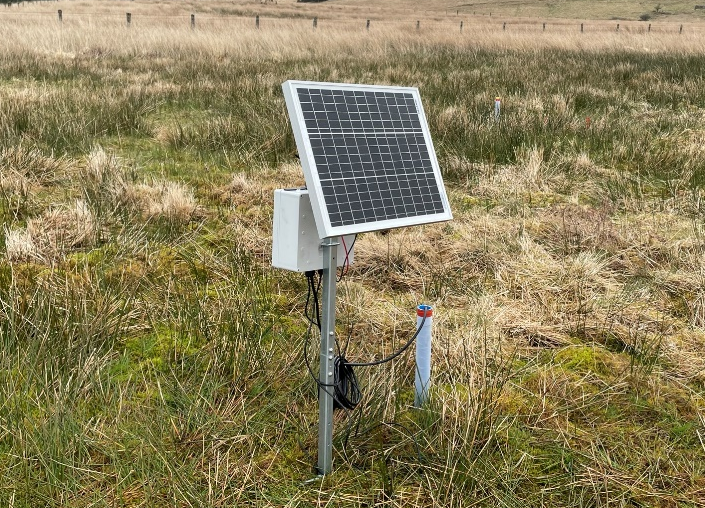

Science-led MRV you can trust.
A short overview of our mission, our monitoring approach, and how Cwiri supports nature-based carbon projects.

Sensors and Earth Observation provide continuous, scalable insight into water table depth, peatland condition, and environmental change.

Validated carbon and hydrological models quantify emissions, restoration impact, and long‑term landscape trajectories.

Dashboards and MRV outputs provide transparent, repeatable reporting aligned with the Peatland Code and Woodland Carbon Code.
Cwiri provides tiered monitoring services that measure water table depth, track peatland condition, and estimate carbon emissions with increasing levels of confidence. Our adaptive framework ensures your monitoring evolves with your landscape.